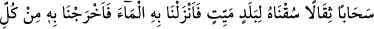
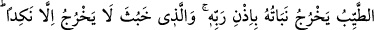
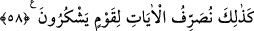
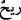

ALLAH’IN KUDRETİNİN
ALÂMETLERİ
57. Rüzgârları rahmetinin önünde müjde olarak gönderen O’dur. Sonunda onlar
(o rüzgârlar), ağır bulutları yüklenince onu ölü bir memlekete sevkederiz. Orada
suyu indirir ve onunla türlü türlü meyveler çıkarırız. İşte ölüleri de böyle
çıkaracağız. Herhalde bundan ibret alırsınız.
58. Rabbinin izniyle güzel memleketin bitkisi (güzel) çıkar; kötü olandan ise
faydasız bitkiden başka bir şey çıkmaz. İşte biz, şükreden bir kavim için ayetleri
böyle açıklıyoruz.
“O ki rüzgarları rahmetinin” yani yağmurun “önünde müjdeci olarak gönderir.”
Kur’an’da “
” (rüzgarlar) olarak zikredilen kelimeler hep rahmet içindir. “
”
(rüzgar) olarak zikredilenler ise hep azab içindir. Bunun delili şudur: Aleyhi’s-salâtü
ve’s-selâm Efendimiz, rüzgarlar estiği zaman dizleri üzerine çökerek: “Allah’ım, onu
bizim için rahmet (riyâh) kıl, azab (rîh) kılma. Allah’ım, bizi gazabınla öldürme,
azabınla helâk etme ve bundan önce bize afiyet ver.” diye dua ederdi.[56]
Bir hadiste buyurulmuştur ki: “Rüzgara sövmeyiniz. Hoşunuza gitmeyen bir durum
görürseniz şöyle deyiniz: “Allah’ım, bu rüzgarın, onun beraberinde getirdiklerinin ve
ona yapmasını emrettiklerinin hayırlı olanını senden niyaz ederiz. Bu rüzgarın,
içinde bulunanların ve ona yapmasını emrettiklerinin şerrinden de sana sığınırız.”[57]
Meşayihten biri şöyle der: Geminin durması ve hareket etmesinde rüzgara güvenme.
Çünkü bu tevhîd-i ef‘âl bakımından şirk ve işlerin hakîkatini bilmemektir. Kainattaki
olayların nasıl cereyan ettiğini hakikati üzere gören kişi, rüzgarın kendiliğinden hareket
etmediğini, bilakis onu da harekete geçiren bir güç olduğunu bilir. Onu hareket ettiren,
hiçbir muharriki olmayan ilk muharrike (muharrik-i evvel) varıncaya kadar her şeyi
hareket ettirendir. O da Allah’tır. Allah ise hareket etmekten ve buna benzer şeylerden
münezzehtir.
Ayette geçen “rahmet”ten maksad, yağmurdur. Allah Teâlâ rüzgarı, yağmuru